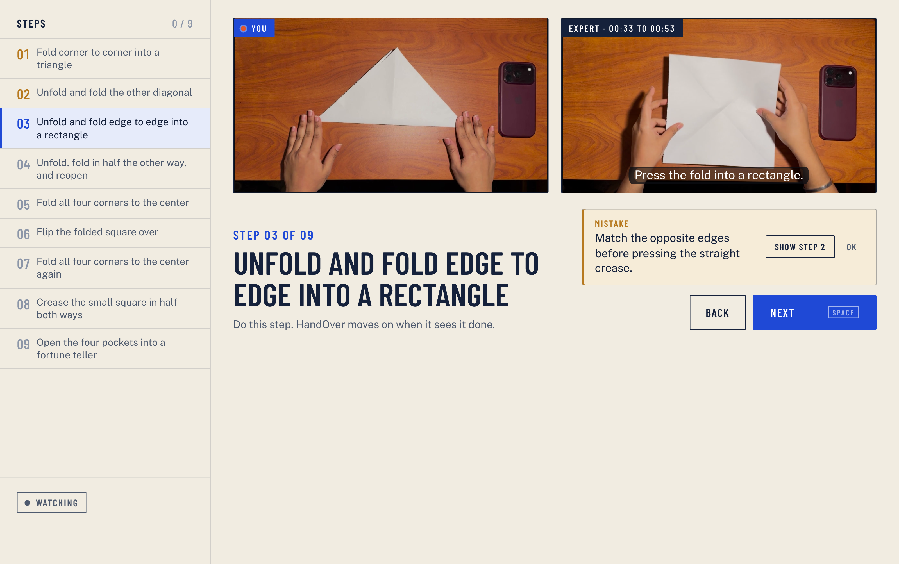
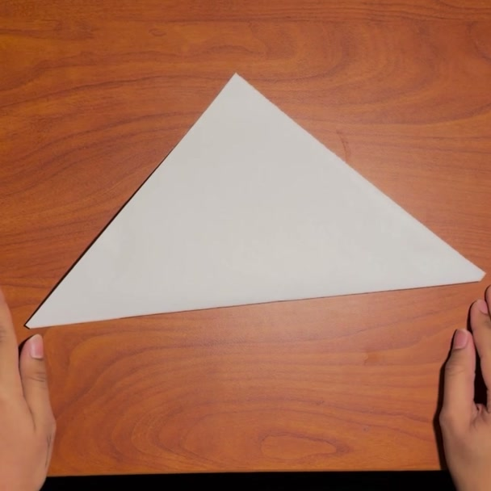
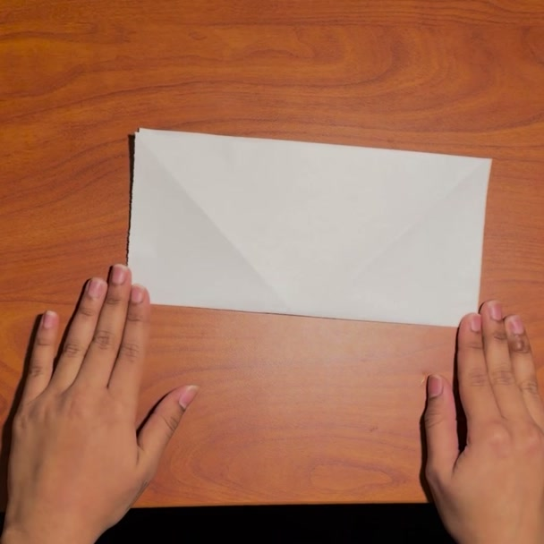
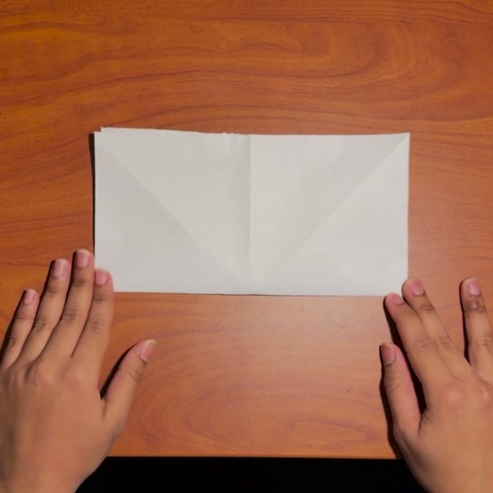
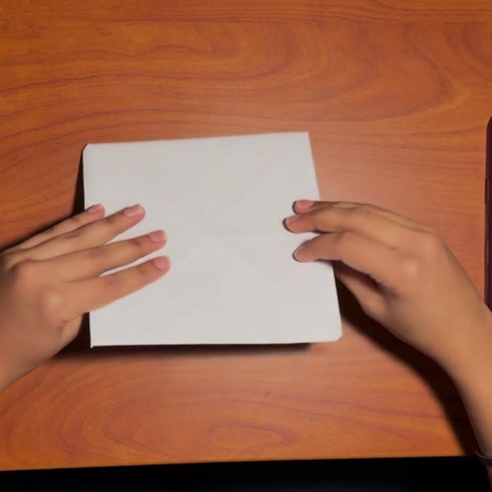
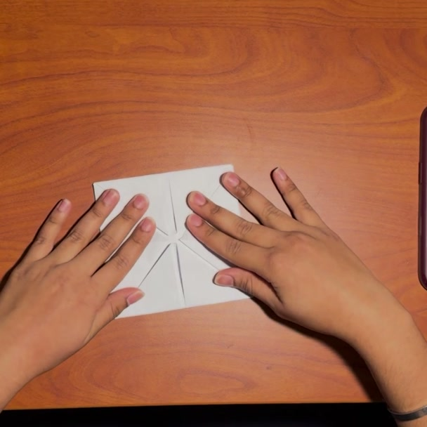
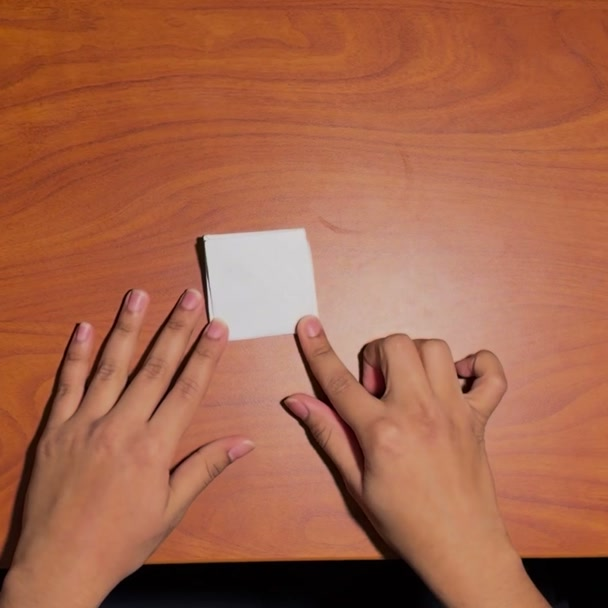

HandOver
Experts teach the same task over and over. With HandOver they do it once, and the lesson watches the next person.
01
The problem
A senior worker shows every new hire the same task, again and again. A video plays the steps, but it cannot see whether you did them.
02
How it works
- 1
The expert records once
On Meta glasses or any camera.
- 2
HandOver cuts a lesson
A clip of the expert's hands per step, with captions, narration and a reference frame of done.
- 3
The camera follows along
The next clip plays when your camera sees the step done. Behind? It says the common mistake. Next always works.

YouYour camera. The paper here is still a triangle.
ExpertTheir clip for step 3, looping, with captions.
MistakeThe step's common mistake, on screen and spoken.
03
Two demo lessons
Live demo
Fold a fortune teller
9 steps, a 3:08 take. Blue: checked by camera.
01
02

03

04
05

06

07

08
09
Showcase
Front wheel check
Brakes checked, wheel off, then rim, spokes and tire. Wheel back on and a final spin.
04
Under the hood
One laptop is the hubTeach
Learn
Data
Expert takeMeta glasses or any camera
Find the stepsOne Gemini call reads the take
CutClips, captions, reference frames
NarrateClaude writes it, Kokoro speaks it
Lesson folderClips, frames and check questions
Learner cameraA phone, in the HandOver app or a browser page. Frames go to the hub on the local network.
Hub
Motion gateChecks when the picture is still and has changed
Vision checkClaude Haiku or Gemini compares before, done and live
DebounceTwo confident yeses, or one at 0.92 that names no difference
Learn screenThe next clip and a chime, or the step's common mistake. Next always works.
Event logRun, step, check answer, confidence, latency. No images, no names.
Databricks4 tables, a Volume, filtered views
AI/BIDashboard of learner runs
Genie"Which step do people get stuck on?"